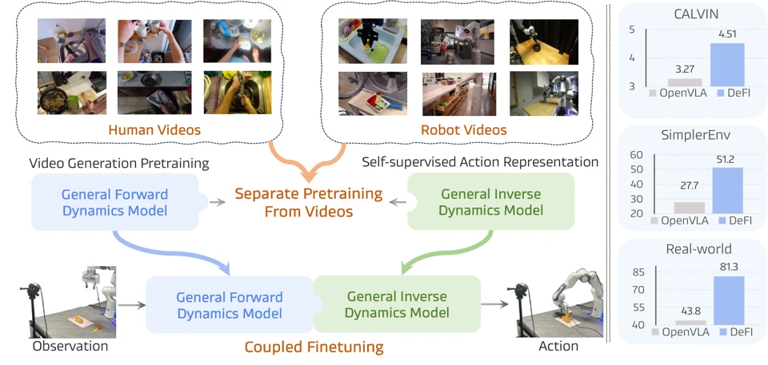

Li Zhang
Professor
School of Data Science, Fudan University
Shanghai Innovation Institute
I am a full professor in the School of Data Science at Fudan University, where I lead the Logos Robotics Group, and I also hold a joint appointment at Shanghai Innovation Institute (SII). Previously, I was a Research Scientist at Samsung AI Center Cambridge, and a Postdoctoral Researcher at the Department of Engineering Science, University of Oxford, under the supervision of professor Philip H.S. Torr and professor Andrew Zisserman. Prior to joining Oxford, I read my PhD in computer science under the supervision of professor Tao Xiang at Queen Mary University of London.
My research interests cover the broad areas of deep learning and artificial intelligence, with a particular focus on building intelligence for robotics, which falls under physical AI. Specific areas of interest include embodied intelligence, general-purpose multimodal large models and agents, and—to a lesser extent—3D vision and autonomous driving.
To Prospective Students
If you are highly creative, have top grades/coding skill and interested in joining my group please do not hesitate to send me your CV and transcripts of grades.
Make sure you are super enthusiastic about AI research.
News
- Two papers to appear in NeurIPS 2026.
- I will be serving as an Area Chair for ICLR 2027.
- I will be serving as an Area Chair for CVPR 2027.
- One paper to appear in CoRL 2026.
- One paper to appear in SIGGRAPH Asia 2026.
- I will be serving as a Senior Program Committee for AAAI 2027.
- I will be serving as an Area Chair for WACV 2026.
- Five papers to appear in ECCV 2026.
- Two papers to appear in ICML 2026.
- Two papers to appear in CVPR 2026.
- Three papers to appear in ICRA 2026.
- Three papers to appear in ICLR 2026.
---- Show More -------- Show Less ----
- Two papers PVG and PARTNER are accepted by IJCV.
- I will be serving as an Area Chair for ECCV 2026.
- Our work Efficient4D is accepted by IJCV.
- One paper to appear in AAAI 2026.
- Our work Brain3D is accepted by IJCV.
- Five papers to appear in NeurIPS 2025.
- Our work RoadNetTransformer is accepted by TPAMI.
- I will be serving as an Area Chair for CVPR 2026.
Selected Publications
Full listSMR: Learning Streaming Motion Retargeting for Humanoids from Human Semantic
arXiv preprint, 2026
paper / project page / code

